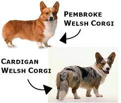

Introduction
The Welsh Corgi is a small type of herding dog that originated in Wales. The name "corgi" is derived from the Welsh words "cor" and "ci", meaning "dwarf" and "dog", respectively. Two separate breeds are recognized: the Pembroke Welsh Corgi and the Cardigan Welsh Corgi.
Physically, the Cardigan and Pembroke are both dwarf breeds with large heads and heavy, long bodies on short, thick legs. They both have upright ears, although the Cardigan’s are larger and more rounded, and their double-coated fur requires little grooming besides regular bathing and brushing.
